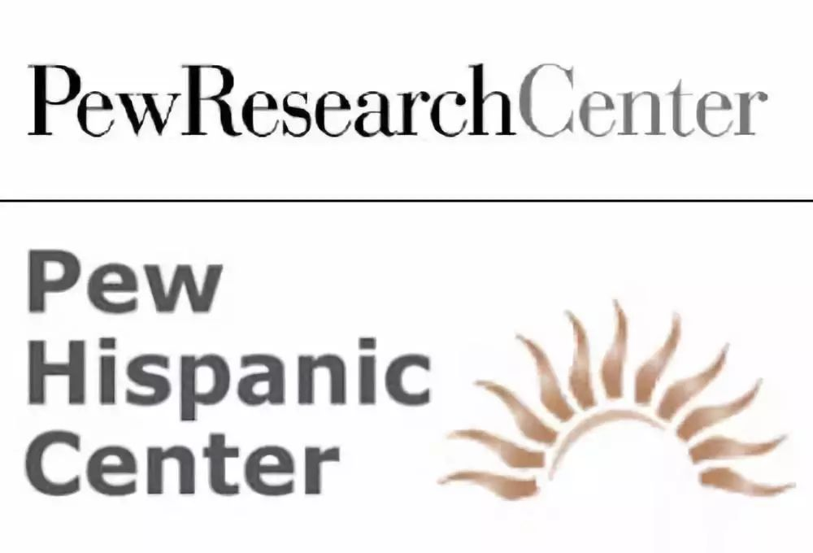
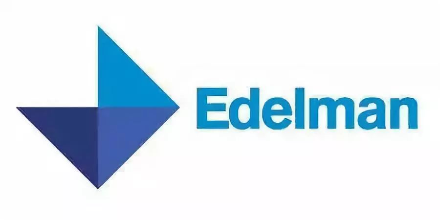
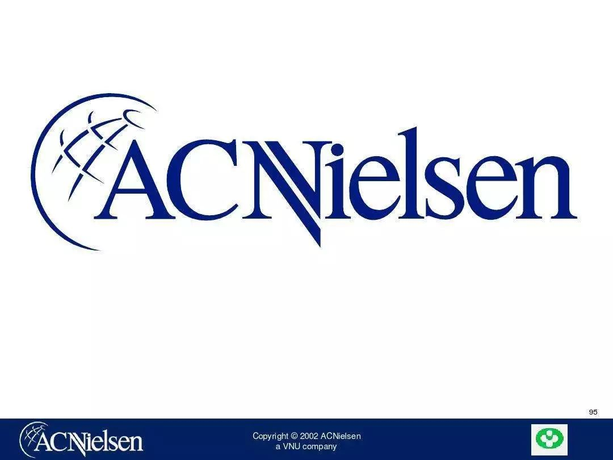
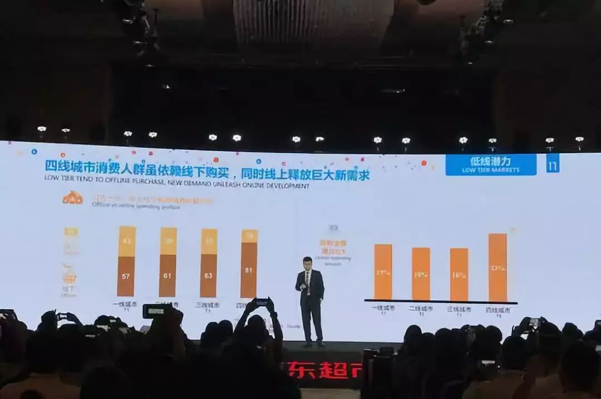

收录于合集
作者简介：小北，中国人民大学经济学院硕士研究生，政文观止Poliview特邀作者。
2016年11月8日，美国总统选举如期举行，让很多选民跌破眼镜的是，共和党的特朗普（Donald Trump ）以选举人的多数票战胜民主党的希拉里（Hillary Clinton），尽管他的大众选票不如后者。这个结果与之前的总统预测大相径庭。这并不是美国总统预测的第一次失败。之前，在1948年的选举中，政治学家预测杜威（Thomas E. Dewey）将获胜，而最终入主白宫的是杜鲁门（Harry S. Truman）。
今天各大民调机构又在磨拳擦掌，纷纷对美国中期选举的结果做出预测。结果会是怎样，吃瓜群众可以当作一出戏剧来看。同时，了解一下全球几大权威调查机构，对我们的观剧体验或许会有极大的提高。
盖洛普公司
盖洛普公司由美国著名的社会科学家、先驱的民意测验专家乔治.盖洛普博士于1935年创立。盖洛普测量、追踪公众对于政治、社会民生、经济等的态度。
1936年乔治.盖洛普博士正确地预言了美国总统富兰克林·罗斯福将击败阿尔弗雷德·兰登，这一结论被各大媒体争相报道，从此“盖洛普”家喻户晓，成为民意测验的代名词。盖洛普以其对社会态度、意见和行为的科学测量和深刻分析而闻名于世。
1999年，盖洛普撰写的、伟大的经理们必读书目关于员工敬业度的著作《First, Break All the Rules》成为全球畅销书，并常年高居全美畅销书排行榜。
最新报道
盖洛普民调：美国中期选举在即，特朗普支持率跌至40%：
① 据俄罗斯卫星网10月30日报道，美国民意调查机构盖洛普公司(Gallup)的每周民调结果显示，美国总统特朗普的支持率一周来下跌至40%；
② 此次民调数据显示，40%的美国人支持特朗普，该数字较一周前(10月21日)下跌了4个百分点，同时，54%的受访者对总统的工作持负面评价
皮尤研究中心

皮尤研究中心（Pew Research Center）是美国的一间独立性民调机构，总部设于华盛顿特区。该中心对那些影响美国乃至世界的问题、态度与潮流提供信息资料。皮尤研究中心受皮尤慈善信托基金资助，是一个无倾向性（non- advocacy）的机构，而皮尤慈善信托基金既资助无倾向性项目，也资助倡议性项目。
皮尤旗下的“人物与新闻”是一个独立的民意调查研究项目，研究新闻，政治和公共政策问题的态度。它最出名的国家定期调查，衡量公众的注意力，以重大新闻，投票，图表趋势在价值观和基本的政治和社会态度。
从2001年开始，皮尤全球态度项目进行了一系列的全球公众意见调查，一系列的主题，从人的评估自己的生活他们的当前状态的世界，并在一天的重要问题上的意见。
最新报道
去年6月，美国皮尤研究中心曾发布民调结果显示，特朗普及其政策“在全球范围内普遍不受欢迎”，连累美国的全球口碑普遍下降。眼下，特朗普将迎来两个大日子——中期选举和当选总统两周年纪念日。不过，皮尤研究中心近日发布民调结果显示，特朗普的国际形象仍然不佳，不满情绪在美国的一些亲密盟国和伙伴中尤为普遍。
比如，只有9%的法国人对特朗普有信心。近八成民众认为，美国在做出外交决策时不考虑法国等国家的利益。
在德国，只有10%的受访民众对特朗普有信心。近七成民众认为，如今美国在解决全球问题方面的付出更少。相比之下，曾有超八成德国人信任美国前总统奥巴马在国际事务上的领导力。
在美国的近邻加拿大，民众同样对这位总统普遍持负面态度，只有25%的加拿大人看好特朗普。近八成民众认为，美国在制定政策时忽视了加拿大的利益。
爱德曼国际公关公司

爱德曼国际公关有限公司是中国最早的中外合资公共关系公司。1985年，爱德曼国际公共有限公司的雏形——注册在法国巴黎的nterasia PR办事处在北京成立。是当时中国的第一家中外合资的公关公司。爱德曼国际公关（中国）有限公司迄今，已发展成为具有北京总部，在上海，广州，香港和台北设有分公司，在中国大陆位于北京、上海、广州3家办事处，共有大约70名雇员。并在全国18个二级城市设有合作机构。
爱德曼中国主要经营项目包括企业信誉管理，金融/投资关系，危机/突发事件管理， 医疗保健，政府及公共事务，消费品和B2B营销，IT传播咨询、公共形象策略咨询、媒体关系、产品定位/市场关系策略咨询、目标受众分析、活动策划与执行、危机管理培训、员工雇佣关系咨询、投资者关系咨询等。
最新报道
《2018年爱德曼信任度调查报告》显示，中国在全球28个参与调研的国家和地区中信任度综合指数位居第一，机构总体信任度共上升27个百分点。
在普通公众受访者中，中国的信任度指数从去年的第三位跃居榜首，与去年相比上升了7个百分点至74%。同时，今年中国的信任度指数达到了过去18年来的最高水平，是全球唯一一个在四类公共机构，即政府、企业、媒体和非政府组织中，信任度都有所增长的市场。这些数据表明，随着中国经济和社会的不断发展，公众对中国各领域发展的信心正在不断增强。
AC尼尔森

AC尼尔森(AC Nielsen)，荷兰VNU集团属下公司，是领导全球的市场研究公司，在全球超过100个国家提供市场动态、消费者行为、传统和新兴媒体监测及分析。客户依靠 AC尼尔森的市场研究、专有产品、分析工具及专业服务，以了解竞争环境，发掘新的机遇和提升他们市场及销售行动的成效和利润。
AC尼尔森的顾客调查组及专项研究服务可以为客户提供众多认识市场发展趋势的机会和手段，并对影响顾客消费决策的各种市场力量加以分析。通过顾客调查组，可以把针对客户的采购信息与地区联系起来，从而为剖析客户的采购动机创造一个可控的研究环境。
最新报道

日前，2018中国快速消费品行业年度峰会在京召开。300多位全球知名快消品巨头齐聚一堂，会上，全球知名市场调研公司尼尔森发布了《品质生活新趋势》报告。在中国消费市场呈现出三个很有意思的趋势。
第一个趋势是品质生活。从商品看，高端水饮、健康、享受等成为品质生活新趋势。
这些高速增长的商品，基本都不是温饱型产品，而是有一定经济实力，追求生活品质的家庭才会顾及保健品的维生素，回去养宠物，会注重男性的护肤保养。这说明品质生活是未来的趋势。
同时，尼尔森还发现。对于生鲜食品，已经有62%的人倾向于网上购物，快速配送，而不是传统的门店自提。这说明随着经济和科技的发展，生活节奏的加快，人们对便利的要求越来越高，人们宁愿在床上点鼠标开门收货，也不愿意到超市去自提。所以便利体验也是未来的重要趋势。
最后，尼尔森还对国内一二三四线城市的消费数据进行了分析。数据显示，网购潜力人群90后在下线城市占比最高，三四线城市中达41%，在四线城市中，家庭消费支出较去年增加了21%。 高于一二三线。
所以，尼尔森的数据体现出来的未来趋势就是品质生活、便利体验、和低线潜力。
总统预测的失败，令学术界重新审视政治学乃至所有社会科学所使用的定量方法。一个迫切而实际的问题是，在社会科学中如何提高预测的准确性？社会科学研究的对象是人，研究者也是人，人与人之间还有互动，在这些领域，我们是否能能够使用实证方法做研究？
答案当然时肯定的。问题往往出在研究的方法上。 如何设计随机实验、如何分析实验数 据以及如何解释研究的发现？有兴趣的读者可以从《实地实验：设计分析与解释》一书中找到具体的解决方案。但是奖学金还没发，没钱买书怎么办？于是政观又双叒叕给大家送书了，从推送之时起， 在本条推送下方留言不少于50字的学术性评论并将此链接转发至朋友圈，我们将在北京时间11月9日21：00从点赞数前十的评论中抽取其中三位幸运读者，向他们送出赠书。
END
艾伦·格伯与唐纳德·格林所著的 《实地实验：设计、分析与解释》 已由 中国人民大学出版社 出版。
本书是一本对社会科学实地实验进行权威、清晰介绍的著作。两位作者均是在实验方法领域具有丰富经验的顶尖学者。本书内容覆盖了实地实验的设计、分析与解释的主要方面，语言通俗易懂，行文流畅。
通过本书，读者可以学习如何设计随机实验、如何分析实验数据以及如何解释研究的发现。除了基本方法的讲授以外，作者还使用了一系列特殊形式来帮助学生更深入地理解实地实验，如来自社会科学文献的丰富案例、问题设置与讨论、练习用数据集以及延伸阅读材料。
微店购买链接
编辑：吴温泉
 “广告点一点，也是支持学术公益
“广告点一点，也是支持学术公益 ”
”
政文观止
微信扫一扫赞赏作者 __赞赏
已喜欢，对作者说句悄悄话
取消 __
发送给作者
发送
最多40字，当前共字
上一页 1/3 下一页
长按二维码向我转账
受苹果公司新规定影响，微信 iOS 版的赞赏功能被关闭，可通过二维码转账支持公众号。